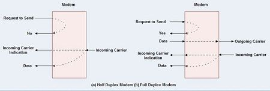
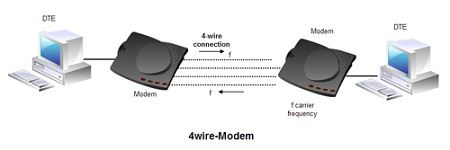
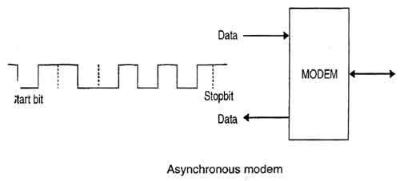
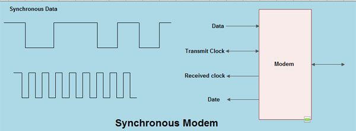
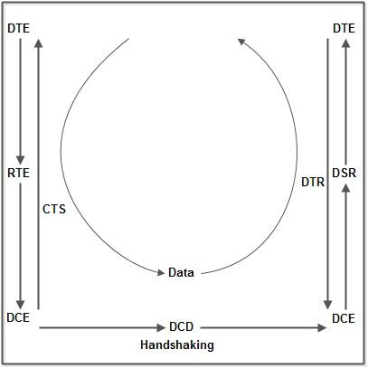

A modem is a hardware device that allows a computer to send and receive data over a telephone line or a cable or satellite connection. In the case of transmission over an analog telephone line, which was once the most popular way to access the internet, the modem converts data between analog and digital formats in real time for two-way network communication. In the case of the high-speed digital modems popular today, the signal is much simpler and doesn't require the analog-to-digital conversion.
Types of Modems
• Modems can be of several types and they can be categorized in a number of ways.
• Categorization is usually based on the following basic modem features:
1. Directional capacity: half duplex modem and full duplex modem.
2. Connection to the line: 2-wire modem and 4-wire modem.
3. Transmission mode: asynchronous modem and synchronous modem.
Half and Full Duplex Modem
Half duplex
1. A half duplex modem permits transmission in one direction at a time.
2. If a carrier is detected on the line by the modem, I gives an indication of the incoming carrier to the DTE through a control signal of its digital interface.
3. As long as they camel' IS being received; the modem does not give permission to the DTE to transmit data.

Full duplex
• A full duplex modem allows simultaneous transmission in both directions.
• Therefore, there are two carriers on the line, one outgoing and the other incoming. Wire and 4-wire Modems
• The line interface of the modem can have a 2-wire or a 4-wire connection to transmission medium. 4-wire Modem
• In a 4-wire connection, one pair of wires is used for the outgoing carrier and the other pair is used for incoming carrier.
• Full duplex and half duplex modes of data transmission are possible on a 4- wire connection.
• As the physical transmission path for each direction is separate, the same carrier frequency can be used for both the directions.
2-wire Modem
• 2-wire modems use the same pair of wires for outgoing and incoming carriers.
• A leased 2-wireconrlection is usually cheaper than a 4-wire connection as only one pair of wires is extended to the subscriber's premises.
• The data connection established through telephone exchange is also a 2-wire connection.
• In 2-wire modems, half duplex mode of transmission that uses the same frequency for the incoming and outgoing carriers can be easily implemented.
• For full duplex mode of operation, it is necessary to have two transmission channels, one for transmit direction and the other for receive direction.
• This is achieved by frequency division multiplexing of two different carrier frequencies. These carriers are placed within the bandwidth of the speech channel.

Asynchronous & Synchronous Modems
Asynchronous Modem
• Asynchronous modems can handle data bytes with start and stop bits.
• There is no separate timing signal or clock between the modem and the DTE.
• The internal timing pulses are synchronized repeatedly to the leading edge of the start pulse .

Synchronous Modem
• Synchronous modems can handle a continuous stream of data bits but requires a clock signal.
• The data bits are always synchronized to the clock signal.
• There are separate clocks for the data bits being transmitted and received.
• For synchronous transmission of data bits, the DTE can use its internal clock and supply the same to the modem.

Modulation techniques used for Modem:
The basic modulation techniques used by a modem to convert digital data to analog signals are :
• Amplitude shift keying (ASK).
• Frequency shift keying (FSK).
• Phase shift keying (PSK).
• Differential PSK (DPSK).

These techniques are known as the binary continuous wave (CW) modulation.
• Modems are always used in pairs. Any system whether simplex, half duplex or full duplex requires a modem at the transmitting as well as the receiving end.
• Thus a modem acts as the electronic bridge between two worlds - the world of purely digital signals and the established analog world.
souravsingh2626@gmail.com
indus hostel !!
room number 207......
contact..
8493073943
........................................................................................................................